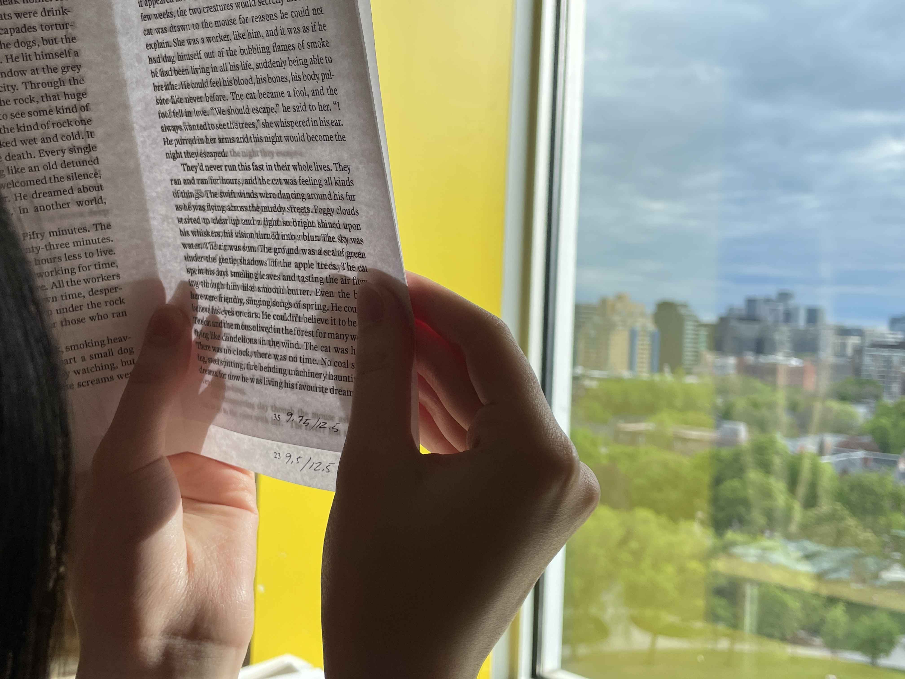

Hi! My name is Samantha Lee, and I am a fourth year Graphic Design student at OCAD University in Toronto, Canada. My practice revolves around creative research-driven solutions, specializing in publication, typography, and branding. I take simple ideas and turn them into complex, multi-faceted projects.
Although my passions lie in print, I consider myself an all-rounder. Whether it's coding websites from scratch, motion design, or photography, I'm always looking for a new skill to pick up.
When I'm not obsessing over type or fondling paper samples, you'll find me binding my own sketchbooks, gaming, or carving my next wooden figure!
2025: Applied Arts Student Awards Editorial Design Entire Book/Magazine - Single↗
2024: Jan van Kampen Scholarship, OCAD University
2023: Ignite Imagination Scholarship, OCAD University
Currently @ Fook Communications as an Assistant Designer
